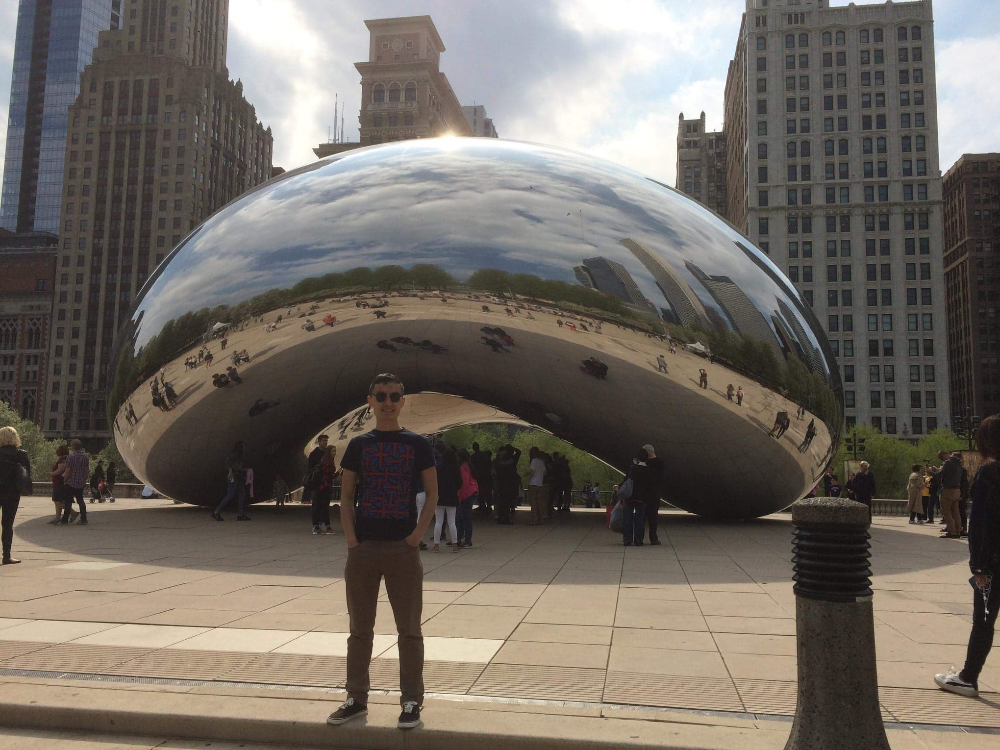
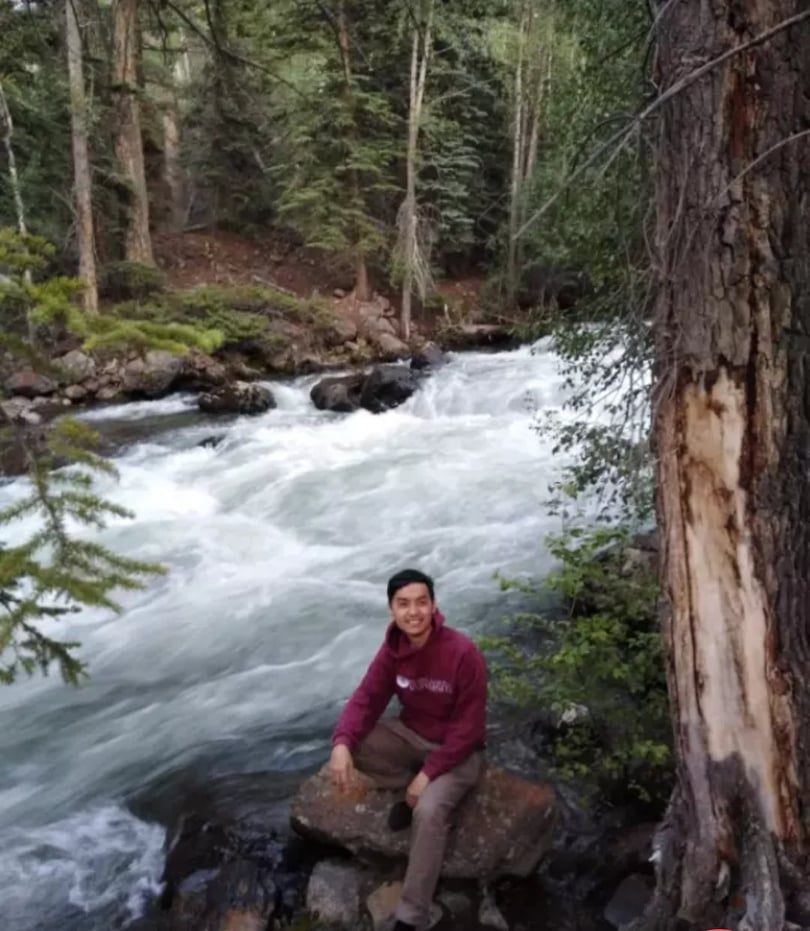

Traveling is fun
I like traveling, because you can learn something new about foreign people and their culture. Also, if you stay long enough in a new place you can find out that “developed” country is not a “heaven on Earth”. In 1997, I and my family went to live in Israel for 4 years (I don’t have jpg pictures from there). Somewhere in between 2001-2016 I have been several times in Uzbekistan. I finished first year at LCC when I went to Greece for summer work, you can see first picture. After my second year at LCC I went to the USA to work, specifically to state of Wisconsin through Illinoi, you can see second picture. After third year at LCC I went to the USA again, specifically to state of Colorado, you can see third picture. If you want to go back short story of my life than go to ”My Life” section. If you want to see my interest than go to ”Interests”section. And Finally, if you want to know how I see my life in 5-10 years go to ”Future Life”section.

